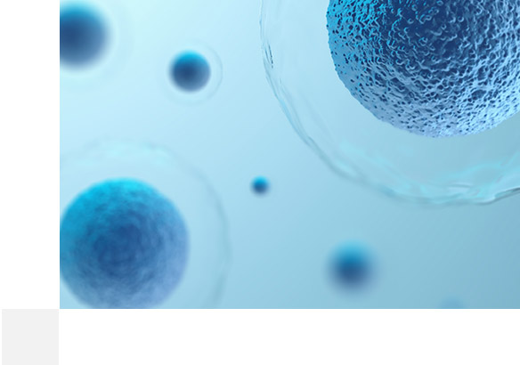

VISION
K-BioFoundry will unite and expand the capabilities of the national laboratories to develop a robust, agile biomanufacturing platform accessible to researchers across the private and public sectors
MISSION
K-BioFoundry will integrate industrially relevant production microbes, advanced tools for biological engineering and data analysis, and robust, scaled-up processes for integrated biomanufacturing
